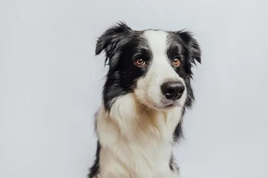
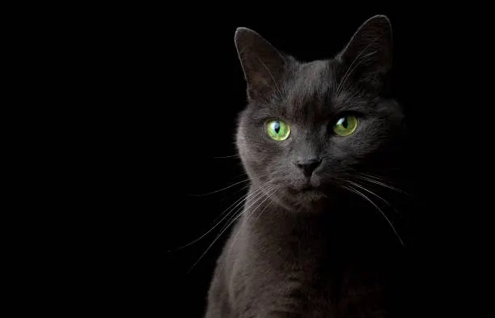
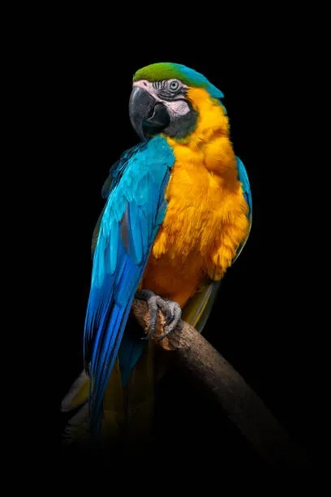

Friendly dog
If you’re looking for someone to judge you, keep looking. I’m just here for the games, the shared naps and to remind you that life is better with a pair of hairy ears by your side.

If you’re looking for someone to judge you, keep looking. I’m just here for the games, the shared naps and to remind you that life is better with a pair of hairy ears by your side.

You can look but not touch. I am a cat with very clear boundaries and a sacred personal space. I’m not looking for friends, I’m looking for a butler to serve me dinner on time and then disappear. If you’re looking for affection, buy yourself a stuffed animal.

No filter and with much to say. I am the soul of the party and the official speaker of the house. If you’re looking for silence, you’ve got the wrong pet; but if you’re looking for someone to answer you, laugh at your jokes, and repeat your secrets at the worst possible moment, I’m your best bet!